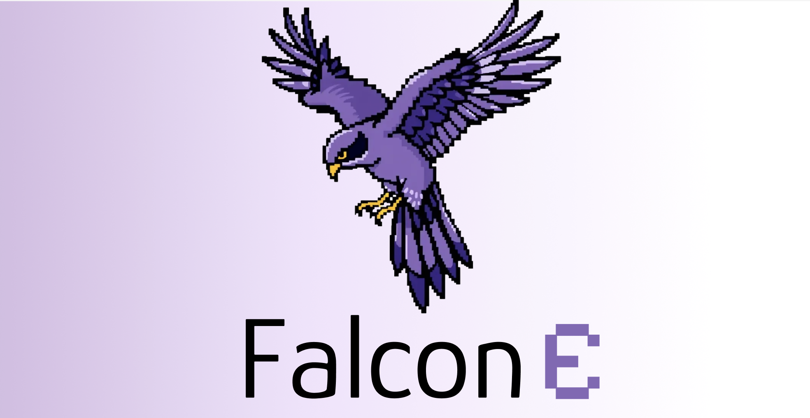

Summary
Falcon Edge is a family of 1.58-bit ternary language models at 1B and 3B scale, built on the BitNet architecture. Each weight is constrained to {−1, 0, +1}, eliminating floating-point multiplications from the forward pass. The result: Falcon-E-1B at 665 MB and Falcon-E-3B at 999 MB — 4–6× smaller than full-precision equivalents — while running up to 5× faster on CPU and remaining competitive with Llama 3.2 1B, Gemma 3 1B, and Qwen 2.5 1.5B on standard benchmarks.
What distinguishes Falcon Edge from prior BitNet work is that the models are explicitly designed to be fine-tunable. A single training run produces three deployment formats — native BitNet, bfloat16, and a pre-quantized checkpoint for supervised fine-tuning — alongside onebitllms, an open-source toolkit that makes BitNet SFT accessible with standard HuggingFace infrastructure.
Key Contributions
Architecture
1.58-Bit Ternary Weights & Near Matmul-Free Inference
BitNet replaces standard linear layers with BitLinear layers whose weights are constrained to {−1, 0, +1} throughout training — not just at inference time. During the forward pass, activations are quantized to int8 and multiplied by the ternary weight matrix using integer arithmetic, then rescaled with a learned per-layer scale. Because ternary weights require only additions and subtractions, the dominant multiply-accumulate cost of a linear layer disappears, enabling faster CPU execution and minimal memory bandwidth pressure.
Falcon Edge makes one modification to the standard BitNet design: Layer Normalization layers inside BitNet blocks are removed, improving training stability without compromising the quantization scheme. The architecture remains Llama-compatible with a 32,678-token vocabulary, preserving full ecosystem compatibility.
Deployment Strategy
Universal Model: One Training Run, Three Deployment Formats
A single training run produces all three formats. The bfloat16 variant is obtained by injecting the per-layer weight scale learned during quantization-aware training back into the weights, producing a standard floating-point model loadable by any HuggingFace-compatible library — no BitNet-specific code required. The pre-quantized checkpoint retains ternary weights in bfloat16 storage with scale metadata, serving as the starting point for fine-tuning. A single Falcon Edge checkpoint therefore covers cloud APIs (bfloat16), on-device deployment (native BitNet), and domain adaptation (pre-quantized).
Training overhead for the ternary-aware process is approximately 20% above standard pretraining on ~1.5 trillion tokens — modest given that three formats are produced from one run.
Ecosystem
Fine-Tunable BitNet & the onebitllms Toolkit
Prior BitNet releases could not be fine-tuned: the ternary constraint makes standard gradient-based adaptation incompatible without specialized infrastructure. Falcon Edge's pre-quantized checkpoint format solves this — gradients flow through the learned scale parameters rather than the discrete weights, enabling quantization-aware supervised fine-tuning from the ternary starting point.
onebitllms is the open-source Python toolkit released alongside the models. It integrates with HuggingFace trl and provides three utilities: converting pre-quantized checkpoints to BitLinear training format, quantizing a fine-tuned model back to ternary, and custom Triton kernels for in-training quantization. Fine-tuning requires loading the pre-quantized checkpoint, running a standard SFTTrainer loop, and calling quantize_to_1bit on the output.
Full parameter fine-tuning is supported; PEFT methods for BitNet remain an open research question. This demonstrates that ternary models can be adapted to specific domains while retaining general competitiveness — a path toward many small, specialized models deployable at the edge.
Highlights
- Falcon-E-1B at 665 MB, Falcon-E-3B at 999 MB — 4–6× smaller than full-precision equivalents, up to 5× faster on CPU.
- Competitive with Llama 3.2 1B, Gemma 3 1B, and Qwen 2.5 1.5B on standard benchmarks.
- One training run, three formats: native BitNet, bfloat16, and pre-quantized for fine-tuning. ~20% overhead vs. standard pretraining.
- First BitNet family designed to be fine-tunable;
onebitllmstoolkit makes BitNet SFT accessible with standard HuggingFace infrastructure. - Llama-compatible architecture with 32,678-token vocabulary; GGUF variants available.